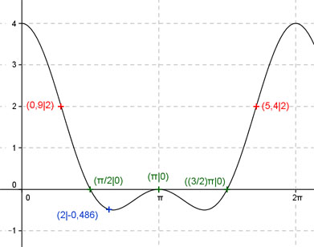

Aufgabe 226
Ergänzen Sie die Wertetabelle für x zwischen 0 und 2π:
y = cos 2x + 2 cos(x) + 1
x 2 0,9 oder 5,4
y -0,486 2
Periode = 2π
Berechnung der Nullstellen:
cos 2x + 2 cos(x) + 1 = 0
mit cos 2x = 2 cos2 x - 1
2 cos2 x - 1 + 2 cos x + 1 = 0
2 cos2 x + 2 cos x = 0
2 cos x (cos(x) + 1) = 0
2 cos x = 0 -->
x = π/2 + k * π mit k = 1, 2, 3, ...
cos(x) + 1 = 0 |-1
cosx = -1 --> x = π
x1 = π/2 oder 90°,
x2 = π oder 180°
x3 = (3/2)π oder 270°.
Die Amplitude triit an der Stelle 0 bzw. 0° und
2π bzw. 360° auf.
f(0°) = |cos 2*0° + 2 * cos 0°| + 1 =
= 1 + 2 * 1 + 1 = 4

Funktionswert an einer Stelle x ermitteln:
x = 2
f(2) = cos (2 * 2) + 2 cos (2) + 1 =
= cos (2 * 114,6°) + 2 cos (114,6°) + 1
= -0,486 gerundet
Berechnung der x-Werte für y = f(x) = 2
fx = 2 eingesetzt, existiert zwischen 0 und π
bzw. 0° und 180° und zwischen π und 2π bzw.
180° und 360° (siehe Graph).
2 = cos 2x + 2 cos(x) + 1
mit cos 2x = 2 cos2 x - 1
2 cos2 x - 1 + 2 cos x + 1 = 2
2 cos2 x + 2 cos x = 2 |-2
2 cos2 x + 2 cos(x) - 2 = 0 |:2
cos2 x + cos(x) - 1 = 0
p, q - Formel:
p = 1 ; q = -1
 cos x1,2 = -0,5 ± 1,12
cos x1 = 0,62 -->
x1 = arc cos 0,62 = 0,9 gerundet.
cos x2 = -1,62 keine Lösung,
cos x kann nicht kleiner als -1 werden.
x1 = 0,9 oder 51,6° gerundet.
x2 = (2π - 0,9) = 5,38 (5,4 gerundet) oder 309,4°
cos x1,2 = -0,5 ± 1,12
cos x1 = 0,62 -->
x1 = arc cos 0,62 = 0,9 gerundet.
cos x2 = -1,62 keine Lösung,
cos x kann nicht kleiner als -1 werden.
x1 = 0,9 oder 51,6° gerundet.
x2 = (2π - 0,9) = 5,38 (5,4 gerundet) oder 309,4°